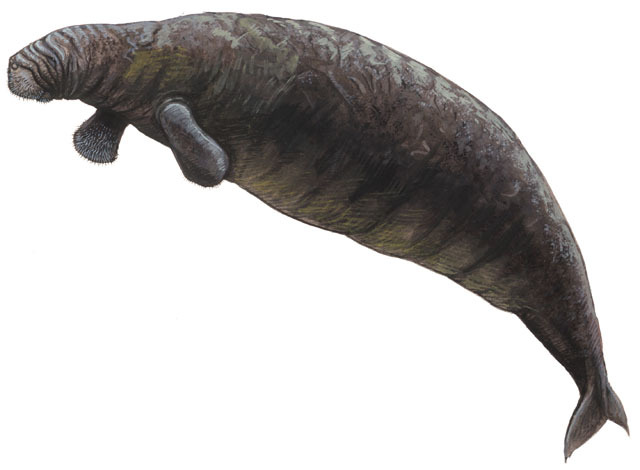

Home
Animals Gone Extinct
Steller's sea cow, discovered in 1741 and gone extinct in 1768, was one of the few megafaunal species gone extinct. Megafauna means an animal above a cerntain weight. There are several categories: the megaherbivoes (larger than 1000 kg). There are the megacarnivores (bigger than 100 kg), as well as ocean megafauna. Steller's sea cow was estimated to be at around 4000kg and was hunted to extinction by humans.
Explore
